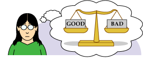

Science is powerful. It has generated the knowledge that allows us to call a friend halfway around the world with a cell phone, vaccinate a baby against polio, build a skyscraper, and drive a car. And science helps us answer important questions like which areas might be hit by a tsunami after an earthquake, how did the hole in the ozone layer form, how can we protect our crops from pests, and who were our evolutionary ancestors? With such breadth, the reach of science might seem to be endless, but it is not. Science has definite limits.
Science doesn't make moral judgments

When is euthanasia the right thing to do? What universal rights should humans have? Should other animals have rights? Questions like these are important, but scientific research will not answer them. Science can help us learn about terminal illnesses and the history of human and animal rights - and that knowledge can inform our opinions and decisions. But ultimately, individual people must make moral judgments. Science helps us describe how the world is, but it cannot make any judgments about whether that state of affairs is right, wrong, good, or bad.